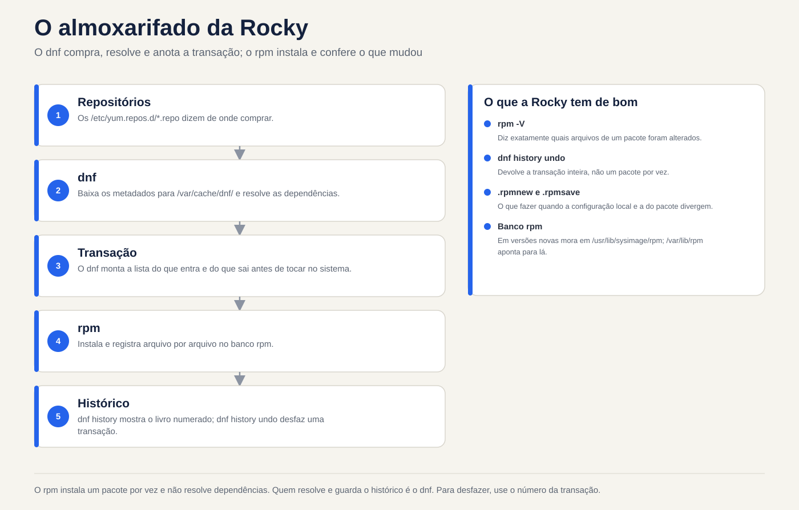
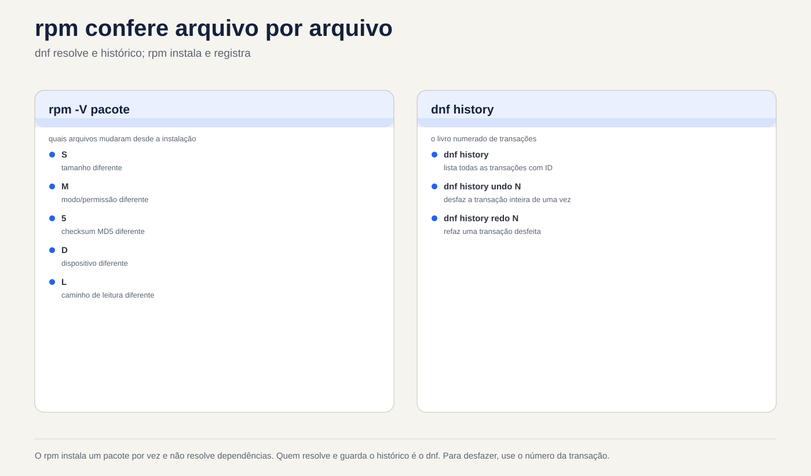

Lezione 6.2 · Pacchetti presso Rocky
Nell'ultima lezione hai imparato il mondo Debian: apt buy, dpkg save. Oggi è lo stesso magazzino con nomi diversi: acquisti dnf, negozi rpm. La logica è la stessa, quindi questa lezione si muove più velocemente. Ciò che è diverso e molto buono in Rocky è la cronologia con annullamento (dnf history undo) e il controllo di integrità (rpm -V). Entrambi salvano il server in produzione.
Nucleo di questa lezione:
dnf install/remove/upgrade/search/info/provides,dnf install ./arquivo.rpm,rpm -qa/-qi/-ql/-qc/-qf,rpm -V,dnf historyednf history undo,.rpmnewe.rpmsave. Il resto è approfondito.
| File | |
|---|---|
| Modulo | M6 · Software, lezione 2 di 5 |
| Quando | Settimana 10 |
| Alla fine ce la puoi fare | Installa, rimuovi e aggiorna i pacchetti con dnf; scoprire proprietario e contenuto dei pacchetti con rpm; controlla se qualcuno ha modificato i file in un pacchetto; annullare una transazione attraverso la cronologia |
| Articoli di prova | LPIC-1 102.5 (RPM e YUM/DNF, con nozione zypper) · RHCSA: installazione e aggiornamento dei pacchetti dal repository e dall'archivio locale |
| Prerequisiti | lezione 6.1 · rock-lab con internet |
| Ora | ~2h30 |
| Istantanee | m6a2-inicio e m6a2-fim, solo presso rock-lab (201). debian-lab riposa |
1 · Riscaldamento
Rispondere prima di leggere. Il foglio delle risposte si trova alla fine della lezione.
rpm -i pacote.rpmcerca le dipendenze mancanti?- Ieri hai installato un pacchetto e si è interrotto un servizio. In Rocky, puoi annullare l'intera installazione, dipendenze incluse, con un singolo comando?
- Sospetti che qualcuno abbia modificato
/etc/ssh/sshd_confige il binario disshd. Esiste un modo per chiedere al sistema "cosa è cambiato da quando il pacchetto è stato installato?"
2 · Perché è importante
| Il cosiddetto | La risposta sbagliata | Cosa provoca |
|---|---|---|
| "Installa l'agente di backup sul server" | Scarica un .rpm da qualsiasi sito Web ed esegui rpm -ivh --nodeps | Pacchetto senza le librerie di cui ha bisogno, che falliscono in seguito, e un database RPM di cui dnf inizia a lamentarsi |
| "Hanno aggiornato ieri e il servizio si è interrotto" | Reinstallare i pacchetti all'istante, o rpm -e --nodeps qualunque sembri colpevole | Ore di tentativi ed errori. dnf history mostrerebbe la transazione esatta e undo la annullerebbe |
| "SSHD è strano, qualcuno lo ha cambiato?" | Apri i file e guarda “negli occhi” | Non vedi un binario scambiato o un'autorizzazione modificata. rpm -V openssh-server viene visualizzato in secondi |
"Il comando semanage non esiste qui" | Cerca su Google e installa il primo pacchetto suggerito | Pacchetto sbagliato o un'altra versione. dnf provides risponde con il pacchetto giusto dal tuo repository |
3 · Modello mentale
È lo stesso magazzino della lezione 6.1. rpm è il magazziniere: installa un pacchetto alla volta, tiene traccia di tutto e controlla che nulla sia stato cambiato. dnf è l'acquirente: legge i cataloghi dei repository, calcola le dipendenze, scarica tutto e lo consegna a rpm. La differenza è che questo acquirente annota ogni acquisto in un libro numerato. E qualsiasi acquisto del libro può essere restituito.
/etc/yum.repos.d/*.repo (de onde comprar)
|
v
dnf --- baixa metadados ---> /var/cache/dnf/ (catálogos e .rpm baixados)
|
| resolve dependências, monta a transação
v
rpm --- instala ---> banco rpm (/var/lib/rpm) (o que está instalado, arquivo por arquivo)
|
v
/var/lib/dnf/history.sqlite (o livro: transação 1, 2, 3... com undo)
/var/log/dnf.log, /var/log/dnf.rpm.logNelle versioni più recenti della famiglia RHEL, la banca RPM risiede lì nei punti /usr/lib/sysimage/rpm e /var/lib/rpm. Per te non importa: chi parla con la banca è sempre rpm.


4 · Gli elementi essenziali
dnf: vita quotidiana
| Comando | Che cosa significa |
|---|---|
dnf check-update | Elenca cosa è stato aggiornato (non installa nulla) |
sudo dnf upgrade | Aggiorna tutto (dnf update è lo stesso comando, vecchio nome) |
sudo dnf upgrade X | Aggiorna solo il pacchetto X |
dnf search termo | Cerca nome e riepilogo |
dnf info X | Versione, repository, dimensione, descrizione |
dnf provides /caminho o dnf provides '*/semanage' | Quale pacchetto fornisce questo file (installato o meno) |
sudo dnf install X | Si installa con dipendenze |
sudo dnf install ./arquivo.rpm | Installa un file .rpm locale che risolve le dipendenze |
sudo dnf remove X | Rimuove X e le dipendenze che utilizzava solo |
sudo dnf reinstall X | Reinstallare la stessa versione |
sudo dnf downgrade X | Torna a una versione precedente se il repository ha |
sudo dnf autoremove | Rimuovere le dipendenze orfane |
dnf list installed / dnf list available | Installato / disponibile |
dnf repolist | Repository attivi |
sudo dnf clean all / sudo dnf makecache | Svuota cache/scarica nuovamente i metadati |
Differenza importante per Debian: dnf non ha un passaggio update separato. Controlla i metadati da solo quando sono vecchi. E dnf remove accetta già le dipendenze orfane di quel pacchetto, senza attendere un autoremove.
Gruppi (rientra in RHCSA): dnf group list mostra i set già pronti e sudo dnf group install "Development Tools" installa un set intero.
Sicurezza: dnf updateinfo list --security elenca gli avvisi di sicurezza in sospeso e sudo dnf upgrade --security applica solo questi.
rpm: domande al storekeeper
Tutto ciò che inizia con -q (query) è di sola lettura e non richiede sudo.
| Comando | Domanda che risponde |
|---|---|
rpm -qa | Tutto ciò che è installato (con | grep, è il tuo dpkg -l) |
rpm -q X | X è installato? Quale versione? |
rpm -qi X | File del pacchetto: versione, data di installazione, origine |
rpm -ql X | File installati da X (dpkg -L) |
rpm -qc X | Solo i file di configurazione X |
rpm -qd X | Solo la documentazione |
rpm -qf /caminho | Da quale pacchetto proviene questo file (dpkg -S) |
rpm -qR X | Da cosa dipende X |
rpm -q --changelog X | head | Cronologia delle modifiche al pacchetto (ottimo per trovare CVE corretti) |
rpm -q --scripts X | Script eseguiti durante l'installazione e la rimozione |
rpm -qpi arq.rpm / rpm -qpl arq.rpm | File e file di un file .rpm non installato (p proviene dal file del pacchetto) |
E le operazioni che dovresti conoscere per il test, ma che difficilmente utilizzi quotidianamente:
| Comando | Che cosa significa |
|---|---|
rpm -ivh arq.rpm | Installa (i), dettagliata (v), con barra di avanzamento (h). Non risolve le dipendenze |
rpm -Uvh arq.rpm | Aggiorna o installa se non esiste |
rpm -Fvh arq.rpm | Aggiorna solo se esiste già (aggiornare) |
rpm -e X | Rimuovere (cancellare) |
--nodeps, --force | Ignorano le protezioni. Su un server si tratta quasi sempre di un errore |
rpm --import chave.asc | Importa una chiave GPG del repository (più nella lezione 6.3) |
rpm -K arq.rpm | Controlla la firma e l'integrità di un .rpm |
rpm -V: "cosa è cambiato?"
RPM memorizza la dimensione, l'hash, i permessi, il proprietario e la data di ciascun file installato. rpm -V X confronta tutto questo con il disco e mostra solo ciò che è cambiato. Nessuna via d'uscita = non è cambiato nulla.
S.5....T. c /etc/ssh/sshd_config| Testi | Cosa è cambiato |
|---|---|
S | Taglia |
M | Modalità (autorizzazioni o tipo) |
5 | Contenuto (hash) |
D | Dispositivo |
L | Destinazione del collegamento simbolico |
U / G | Proprietario/gruppo |
T | Data di modifica |
c prima del percorso | È un file di configurazione: cambiare è normale |
missing | Il file è scomparso |
Admin leggendo: 5 in un file c è qualcuno che ha modificato la configurazione, normale. 5 in binario in /usr/sbin è allarme. rpm -Va controlla l'intero sistema (ci vuole tempo e mostra molte configurazioni modificate; filtra ciò che non hai c).
.rpmnew e .rpmsave
Debian chiede cosa fare quando hai modificato una configurazione e il pacchetto ne porta una nuova. rpm non chiede: decide la regola del pacchetto e lascia un file accanto ad essa.
| Situazione | Cosa fa RPM |
|---|---|
Aggiornamento, hai modificato la configurazione, pacchetto contrassegnato noreplace (il più comune) | Tieni il tuo. Il nuovo va a arquivo.rpmnew |
Aggiornamento, hai modificato, pacchetto non contrassegnato noreplace | Installa quello nuovo. Il tuo va a arquivo.rpmsave |
| Rimozione di un pacchetto di cui hai modificato la configurazione | Elimina il pacchetto e la tua configurazione sarà come arquivo.rpmsave |
Attività di manutenzione dopo ogni aggiornamento importante:
sudo find /etc -name '*.rpmnew' -o -name '*.rpmsave'Ogni .rpmnew è una nuova configurazione che nessuno ha paragonato alla tua (diff tra i due).
Cronologia dnf: il libro degli acquisti
| Comando | Che cosa significa |
|---|---|
sudo dnf history | Elenca transazioni: ID, comando, data, azione, quantità |
sudo dnf history info N | Dettaglio transazione N: chi, quando, ciascun pacco |
sudo dnf history list X | Solo le transazioni che hanno interessato il pacchetto X |
sudo dnf history undo N | Annulla transazione N (cosa hai installato, rimuovi; cosa hai rimosso, reinstallalo) |
sudo dnf history rollback N | Riporta il sistema allo stato immediatamente successivo alla transazione N, annullando tutte le successive |
sudo dnf history redo N | Ripeti transazione N |
dnf repoquery --userinstalled | Ciò che è stato richiesto da qualcuno, non estratto come dipendenza (il limite apt-mark showmanual) |
undo: per reinstallare la vecchia versione, deve ancora esistere nel repository. Per annullare un'installazione, funziona ogni volta.
Blocca versione
L'equivalente di apt-mark hold:
sudo dnf install -y python3-dnf-plugin-versionlock
sudo dnf versionlock add X
dnf versionlock list
sudo dnf versionlock delete XAlternativa grezza: exclude=X* in /etc/dnf/dnf.conf, che nasconde il pacchetto da tutte le operazioni.
Rocky × Debian
| Compito | Roccioso | Debian |
|---|---|---|
| Aggiornamento catalogo | automatico (o dnf makecache) | apt update |
| Pacchetti di aggiornamento | dnf upgrade | apt upgrade |
| Installa/Rimuovi | dnf install / dnf remove | apt install / apt remove |
| Dipendenze di risoluzione dei file locali | dnf install ./x.rpm | apt install ./x.deb |
| Strumento di basso livello | rpm | dpkg |
| Elenco installato | rpm -qa | dpkg -l |
| File del pacchetto | rpm -ql | dpkg -L |
| Proprietario file | rpm -qf | dpkg -S |
| Chi fornisce il file disinstallato | dnf provides | apt-file search |
| Configurazione conservata | .rpmnew / .rpmsave | domanda interattiva e rc |
| Verifica integrità | rpm -V | debsums (pacchetto extra) |
| Cronologia con annullamento | dnf history undo | non esiste (solo registro) |
| Congelare | dnf versionlock | apt-mark hold |
| Repository | /etc/yum.repos.d/*.repo | /etc/apt/sources.list.d/ |
Che dire di zypper?
Zypper è il gestore di openSUSE e SLES. LPIC addebita le nozioni di base e non otterrai una VM da esso. Basta riconoscere: zypper refresh (catalogo), zypper install X, zypper remove X, zypper search X, zypper update, zypper repos. Sotto c'è lo stesso numero di giri.
Cosa c'è nel test. LPIC-1 102.5: opzioni rpm (-i -U -F -e -q -V, con -qa -qi -ql -qf -qc -qp), rpm2cpio (estrae un .rpm senza installazione), dnf e yum (yum oggi è un soprannome per dnf), /etc/yum.repos.d/ e riconosce zypper. RHCSA: installa e aggiorna repository e pacchetti di archivio locale, gruppi e rileva il pacchetto che fornisce un comando. Alla RHCSA non c'è internet: tutto proviene dal repository che configuri, oggetto della lezione 6.3.
5 · Laboratorio guidato
Tutto in rocky-lab (201). debian-lab riposa oggi. Avrai bisogno di Internet sulla VM.
Passaggio 0 · Istantanea e cartella. In Proxmox:
qm snapshot 201 m6a2-inicioNella VM:
mkdir -p ~/lab62 && cd ~/lab62Passaggio 1 · Da dove provengono i pacchetti.
dnf repolist
ls /etc/yum.repos.d/
grep -E '^(name|enabled|gpgcheck)=' /etc/yum.repos.d/*.repo | head -20Risultato previsto: i repository BaseOS, AppStream e extra attivi (enabled=1), tutti con gpgcheck=1. BaseOS è il cuore del sistema; AppStream, le applicazioni. Aprirai effettivamente questi file nella lezione 6.3.
Passaggio 2 · Cerca prima dell'installazione.
dnf check-update | head
dnf search tree | head
dnf info tree
dnf provides '*/semanage'dnf provides risponde in modo simile a policycoreutils-python-utils. Ecco come trovare il pacchetto di un comando che non esiste sulla macchina.
Passaggio 3 · Installa e chiedi RPM.
sudo dnf install -y tree httpd
rpm -q tree httpd
rpm -qi tree | head -12
rpm -ql tree
rpm -qf /usr/sbin/httpd
rpm -qf /etc/httpd/conf/httpd.confNotare le ultime due righe: in Rocky, il binario e la configurazione di Apache sono in un pacchetto httpd-core, e httpd è quasi solo un "ombrello". È la stessa idea di nginx-common in Debian. Memorizza il nome reale in una variabile:
PKG=$(rpm -qf --qf '%{NAME}' /etc/httpd/conf/httpd.conf)
echo $PKG
rpm -qc $PKGPassaggio 4 · rpm -V live.
rpm -V $PKGNessun output: non è cambiato nulla dall'installazione. Ora cambia la configurazione e vedi:
echo '# teste lab62' | sudo tee -a /etc/httpd/conf/httpd.conf
rpm -V $PKGRisultato previsto: S.5....T. c /etc/httpd/conf/httpd.conf. Dimensioni, contenuto e data sono cambiati e c dice che è config. Questo è normale: ogni amministratore modifica config.
Passaggio 5 · Prenota e annulla.
sudo dnf history | head
sudo dnf history info lastPrendi nota dell'ID della transazione del passaggio 3 (quello con install -y tree httpd). Ora annulla:
sudo dnf history undo ID -y
rpm -q tree httpd
ls /etc/httpd/conf/Risultato previsto: tree e httpd non sono più installati e anche le dipendenze che ne derivavano sono scomparse. In /etc/httpd/conf/ c'è un httpd.conf.rpmsave rimasto: l'rpm non cancella una configurazione che hai modificato, la mantiene accanto ad essa.
Passaggio 6 · Un .rpm in mano.
dnf download httpd
ls -l *.rpm
rpm -qpi httpd-2*.rpm | head -8
rpm -qpR httpd-2*.rpm | head
rpm -K httpd-2*.rpm
sudo rpm -ivh httpd-2*.rpmRisultato atteso: rpm -K dice digests signatures OK (il pacco è arrivato firmato ed è integro). rpm -ivh fallisce con Failed dependencies. Nota la differenza per Debian: rpm non si installa a metà. Rifiuta tutto e la banca rimane pulita. Adesso nel modo giusto:
sudo dnf install -y ./httpd-2*.rpm
rpm -q httpdSe dnf download non esiste, manca dnf-plugins-core: sudo dnf install -y dnf-plugins-core.
Passaggio 7 · Aprire un .rpm senza installarlo.
dnf download tree
mkdir extraido && cd extraido
rpm2cpio ../tree-*.rpm | cpio -idmv
find . -type f | head
cd ..Il rpm2cpio trasforma il .rpm in un file cpio e cpio -idmv lo estrae nella cartella corrente. Utilizzato per ottenere un file dall'interno del pacchetto senza installare nulla. (Se manca cpio: sudo dnf install -y cpio.)
Passaggio 8 · Cosa è stato richiesto, cos'è la dipendenza e la sicurezza.
dnf repoquery --userinstalled | grep -E '^(httpd|tree)'
dnf updateinfo list --security | head
rpm -qa --last | headrpm -qa --last ordina i pacchetti in base alla data di installazione: prima il più recente. È la risposta rapida a "cosa è cambiato su questa macchina?".
Passaggio 9 · I registri.
sudo dnf history list httpd
sudo tail -n 20 /var/log/dnf.rpm.logPulizia:
sudo dnf remove -y httpd
sudo rm -f /etc/httpd/conf/httpd.conf.rpmsave
cd ~ && rm -r ~/lab62Decidi 1 · È apparso un .rpmnew
Dopo un dnf upgrade, trovi /etc/httpd/conf/httpd.conf.rpmnew accanto al httpd.conf che hai modificato. Seleziona prima un'opzione.
- A) L'aggiornamento non è riuscito a metà. Reinstallare il pacchetto.
- B) La configurazione è stata mantenuta e la nuova configurazione predefinita è accanto ad essa. Confronta i due e fai emergere ciò che conta.
- C) L'rpm ha cambiato la sua configurazione con quella nuova e quella vecchia è in
.rpmnew.
| Se hai selezionato | Risultato | Perché |
|---|---|---|
| A | Lavoro per niente | Niente è fallito. .rpmnew è il comportamento normale di un %config(noreplace) |
| B | Corretto | rpm ha protetto la tua modifica e ha lasciato la nuova versione affinché tu potessi confrontarla con diff -u httpd.conf httpd.conf.rpmnew |
| C | Confondi i suffissi | Quando il tuo esce fuori posto, diventa .rpmsave. nuovo = cosa è arrivato; save = cosa è stato salvato |
Per salvare: .rpmnew = accanto c'era quello nuovo; .rpmsave = il tuo è stato conservato nella porta accanto. Dopo il confronto, elimina ciò che resta, altrimenti tra un anno nessuno saprà quale è quale.
Decidi 2 · L'aggiornamento di ieri ha interrotto il servizio
In dnf history, la transazione di ieri 42 ha installato il pacchetto agente e ha aggiornato tre librerie. Dopo di lei, 43 e 44 hanno installato cose di cui ha bisogno un altro amministratore. Il servizio è stato interrotto dal 42. Selezionare prima un'opzione.
- A)
sudo dnf remove agente - B)
sudo dnf history undo 42 - C)
sudo dnf history rollback 41
| Se hai selezionato | Risultato | Perché |
|---|---|---|
| A | A metà | agente è uscito, ma le tre librerie rimangono nella nuova versione, che potrebbe essere la colpa |
| B | Annulla esattamente 42 | Rimuovi agente e riporta le tre librerie alla versione precedente (se è ancora nel repository). 43 e 44 sono |
| C | Rovina il lavoro del collega | rollback riporta il sistema allo stato successivo a 41, annullando 42, 43 e 44 |
Per correggere: undo N annulla una transazione; rollback N annulla tutto dopo N. Prima di chiunque altro, sudo dnf history info 42 per vedere cosa ha effettivamente fatto.
6 · Interrompi e correggi
Interruzione 1 · Autorizzazione binaria modificata.


sudo dnf install -y tree
sudo chmod 0644 /usr/bin/tree
tree /etc/yum.repos.dSintomo: Permission denied, anche se il file esiste ed è presente nel sistema.
Diagnosi:
ls -l /usr/bin/tree
rpm -V treeRisultato previsto: .M....... /usr/bin/tree. M dice che la modalità è cambiata, e senza c: è un binario, non una configurazione. Questo non è normale.
Correzione:
sudo rpm --restore tree
rpm -V tree && tree -L 1 /etc/yum.repos.drpm --restore restituisce il proprietario, il gruppo e le autorizzazioni per ciò che il pacchetto ha registrato, senza reinstallarlo. Se il contenuto fosse cambiato (5), allora sudo dnf reinstall tree.
Nella vita reale: un 5 in binario di /usr/bin o /usr/sbin senza alcun aggiornamento che lo spieghi è un segno di invasione. Non abbiate fretta di reinstallare: questo cancella le prove. Isolare la macchina e chiamare la sicurezza.
Interruzione 2 · Installazione forzata.
mkdir -p ~/lab62q && cd ~/lab62q
dnf download httpd
sudo rpm -ivh --nodeps httpd-2*.rpm
rpm -q httpd
sudo dnf checkSintomo: rpm -q dice che httpd è installato, ma dnf check elenca le dipendenze mancanti. Un systemctl start httpd fallirebbe. E ogni operazione dnf da ora in poi ricorderà il problema.
Correzione: lascia che il dnf completi ciò che manca.
sudo dnf install -y httpd
sudo dnf checkIl vicolo cieco dnf check significa che la banca è di nuovo coerente. (Se dnf non risolve il problema, sudo rpm -e --nodeps httpd e installare di nuovo tramite dnf.)
Pulizia: sudo dnf remove -y httpd tree && cd ~ && rm -r ~/lab62q
Interruzione 3 · Banco RPM danneggiato. Non causare questo. Appare dopo un disco pieno o uno spegnimento improvviso: rpm -qa dà un errore, dnf si ferma con error: rpmdb open failed. Correzione:
sudo cp -a /var/lib/rpm /root/rpm-backup-$(date +%F)
sudo rpmdb --rebuilddb
rpm -qa | wc -lPrima la copia, poi la ricostruzione. Sempre.
7 · Insidie
| Trappola | Cosa succede | Come evitare |
|---|---|---|
rpm -ivh invece di dnf install ./ | Errore di dipendenza e il passaggio successivo diventa --nodeps | Per installare, sempre dnf. Il numero di giri è per le domande |
--nodeps e --force "solo per passare" | Banca incoerente, servizio che non aumenta, futuri upgrade in panne | Se è necessario forzarlo, il pacchetto non è corretto per questo sistema |
rollback quando volevo undo | Annulla il lavoro di altre persone | history info prima e undo per una singola operazione |
Ignorare .rpmnew | Vecchia configurazione che perde nuove opzioni o parametro che ha cambiato nome | find /etc -name '*.rpmnew' dopo ogni aggiornamento importante |
Confondere .rpmnew e .rpmsave | Elimina la tua configurazione pensando che fosse quella predefinita | nuovo = arrivato; salva = salvato |
rpm -qf a comando, non sul percorso | rpm -qf tree risponde "il file non esiste" | rpm -qf $(command -v tree) |
rpm -Va sul server caricato | Molti dischi e molti output di configurazione modificati | Controlla i pacchetti che contano: rpm -V openssh-server sudo |
dnf upgrade senza guardare cosa accadrà | Nuovo kernel, servizio riavviato nel momento sbagliato | dnf check-update prima e finestra di manutenzione |
exclude= dimenticato in dnf.conf | Pacchetto che non riceve mai più una correzione di sicurezza | versionlock (che contiene list) e revisione mensile |
8 · Quiz
Rispondi senza guardare. Il foglio delle risposte si trova alla fine della lezione.
- Qual è la differenza tra
rpm -ql httpderpm -qpl httpd-2.4.rpm? rpm -V sudomostra..5....T. /usr/bin/sudo. Cosa significa e qual è il primo passo?- Hai modificato
/etc/httpd/conf/httpd.conf. Cosa succede quando rimuovi il pacco? E quando si aggiorna, il pacchetto contrassegna la configurazione comenoreplace? - Qual è la differenza tra
dnf history undo 42ednf history rollback 42? - Su un Rocky senza
diginstallato, come si fa a sapere quale pacchetto installare? - Quale opzione di query RPM funziona su un file di pacchetto che non è installato? a)
-qab)-qfc)-qpd)-V
9 · Colla
Da sapere a memoria:
| Voglio... | Comando |
|---|---|
| Controlla aggiornamenti/aggiorna | dnf check-update / sudo dnf upgrade |
| Installa/Rimuovi | sudo dnf install X / sudo dnf remove X |
| Installa il file .rpm locale | sudo dnf install ./arquivo.rpm |
| Cerca/leggi informazioni su | dnf search X / dnf info X |
| Chi fornisce questo file/comando | dnf provides '*/comando' |
| È installato? | rpm -q X |
| File/configurazioni del pacchetto | rpm -ql X / rpm -qc X |
| Chi possiede questo file | rpm -qf /caminho |
| Cosa è cambiato nel pacchetto | rpm -V X |
| Cronologia/Annulla | sudo dnf history / sudo dnf history undo N |
Per consultare:
| Voglio... | Comando |
|---|---|
| Dettaglio di una transazione | sudo dnf history info N |
| Torna tutto a un punto | sudo dnf history rollback N |
| File/file di un .rpm | disinstallato rpm -qpi arq.rpm / rpm -qpl arq.rpm |
| Dipendenze | rpm -qR X |
| Log delle modifiche (CVE corretto?) | rpm -q --changelog X | head |
| Installato per data | rpm -qa --last | head |
| Richiesto da qualcuno | dnf repoquery --userinstalled |
| Controlla la firma .rpm | rpm -K arq.rpm |
| Estrai senza installare | rpm2cpio arq.rpm | cpio -idmv |
| Ripristina autorizzazioni | sudo rpm --restore X |
| Banca coerente? | sudo dnf check |
| Solo aggiornamenti di sicurezza | sudo dnf upgrade --security |
| Versione bloccata | sudo dnf versionlock add X |
| Gruppi | dnf group list / sudo dnf group install "Nome" |
| Impostazioni in sospeso | sudo find /etc -name '*.rpmnew' -o -name '*.rpmsave' |
| Registri | /var/log/dnf.log, /var/log/dnf.rpm.log |
Schede flash:
rpm -icon dipendenza mancante → rifiuta tutto, non si installa a metà (a differenza di dpkg).- Lettere da
rpm -V→ Dimensione S, modalità M, contenuto 5, collegamento L, proprietario U, gruppo G, dati T;c= config. .rpmnew×.rpmsave→ nuovo: è arrivato quello nuovo della porta accanto; salva: il tuo è stato salvato nella porta accanto.undo×rollback→ annulla una transazione; il rollback annulla tutto dopo N.-qf×-qp→ -qf: proprietario di un file; -qp: richiede un .rpm disinstallato.
10 · Checklist e chiusura
- [ ] Installo, rimuovo e aggiorno con dnf, compreso il .rpm locale
- [ ] Trovo il pacchetto di un comando che non esiste (
dnf provides) - [ ] Rispondo "di chi è questo file?" e "che file ha questo pacchetto?"
- [ ] Leggo l'output di
rpm -Ve so quando è allarme - [ ] So cosa sono
.rpmnewe.rpmsavee dove cercarli - [ ] Annullo una transazione con
dnf history undo - [ ] So perché
--nodepsè quasi sempre errore
Ultimo esercizio, senza guardare il class: in rocky-lab, installa htop (se non riesci a trovarlo, cerca con dnf search; potrebbe essere in EPEL, oggetto della lezione 6.3, quindi usa invece tmux). Scopri da quale pacchetto proviene il binario, modifica i suoi permessi, dimostra la modifica con rpm -V, correggilo con rpm --restore e, alla fine, annulla l'installazione con dnf history.
Riavvia e conferenza:
sudo reboot
# depois de voltar:
sudo dnf check
sudo dnf history | head -5
rpm -V openssh-server sudodnf check non può mostrare nulla. rpm -V può mostrare solo le configurazioni (c) modificate nelle lezioni precedenti.
Fine istantanea (in Proxmox):
qm snapshot 201 m6a2-fim11 · Nella vita reale
Mission, sola lettura. Su un server Rocky, Alma o RHEL che già gestisci, esegui solo questi comandi. No install, upgrade, remove o undo.
cat /etc/os-release | head -3
dnf repolist
sudo dnf history | head -15
rpm -qa --last | head -15
rpm -V openssh-server sudo
sudo find /etc -name '*.rpmnew' -o -name '*.rpmsave'
grep -i exclude /etc/dnf/dnf.confDomande a cui rispondere:
- Quali repository sono attivi? Eventuali prodotti non standard (EPEL, fornitore)?
- Qual è stata l'ultima transazione, quando e chi l'ha eseguita?
rpm -Vha mostrato qualcosa senzac? (Se mostra5in formato binario, fermati e informa chi si occupa della sicurezza.)- Hai dimenticato
.rpmnewo.rpmsave? Da quando? - C'è
exclude=indnf.conf? Qualcuno sa perché?
Diario: annota per ogni server tipo RHEL i repository extra e i pacchetti congelati, con il motivo.
Domani, senza guardare: scrivi su un pezzo di carta le lettere di rpm -V e il significato di ciascuna.
12 · Scava più a fondo quando vuoi
- dnf-automatic: aggiornamenti automatici nella famiglia RHEL (la coppia del
unattended-upgrades). È disponibile nel modulo di manutenzione. dnf needs-restarting -r: indica se il server deve essere riavviato dopo gli aggiornamenti (kernel, glibc, systemd).- Moduli AppStream (
dnf module list): versioni alternative di PHP, Node, PostgreSQL in Rocky 8 e 9. Nella famiglia RHEL 10 questa forma è stata abbandonata a favore dei pacchetti con la versione nel nome. - dnf5: la nuova generazione di dnf, già standard in Fedora. I comandi giornalieri sono gli stessi.
- file .rpmbuild e .spec: come viene creato un file .rpm. Utile per creare pacchetti di script e distribuirli con dnf.
rpm --querytagse--qf: output RPM formattato, ottimo per i report (rpm -qa --qf '%{NAME} %{INSTALLTIME:date}\n').
DeepTutor (http://10.1.0.149:3782, KB "Linux Sysadmin Course"):
!explica a saída do rpm -V e quando ela indica invasão!feynman a diferença entre .rpmnew e .rpmsave!quiz Aula 6.2, 5 perguntas comparando dnf/rpm com apt/dpkg
Foglio risposte commentate
Riscaldamento
- No.
rpm -iinstalla solo quel file. Se manca una dipendenza, si ferma conFailed dependenciese non installa nulla (dpkg, al contrario, lascia il pacchetto a metà). La persona che risolve le dipendenze èdnf install ./arquivo.rpm. - Sì.
sudo dnf historymostra la transazione esudo dnf history undo Nannulla tutto ciò che ha fatto, dipendenze incluse. Per annullare un aggiornamento, la vecchia versione deve essere ancora nel repository. - Sì:
rpm -V openssh-server. Confronta la dimensione, l'hash, i permessi, il proprietario e la data di ciascun file con quanto registrato al momento dell'installazione. La configurazione modificata appare conc; il binario modificato viene visualizzato senza.
Quiz
rpm -ql httpdchiede alla banca informazioni su un pacchetto installato.rpm -qpl arquivo.rpmrichiede il file .rpm, se installato o meno.pproviene dal file del pacchetto.- Il contenuto (
5) e la data (T) del binario/usr/bin/sudosono cambiati e non è configurato (non hac). Primo passo:sudo dnf history list sudoerpm -qi sudoper vedere se c'era un aggiornamento legittimo incompleto. Se non c'è alcuna spiegazione, trattala come una possibile intrusione: isola la macchina e non reinstallarla prima di aver conservato le prove. - Dopo la rimozione, il pacchetto esce e la sua configurazione modificata rimane
httpd.conf.rpmsave. Quando si aggiorna connoreplace, la configurazione rimane invariata e quella nuova arriva comehttpd.conf.rpmnew. undo 42annulla solo la transazione 42.rollback 42riporta il sistema allo stato immediatamente successivo alla 42, annullando tutte quelle successive (43, 44...).dnf provides '*/bin/dig'(odnf provides dig). La risposta è il pacchettobind-utils. L'equivalente Debian sarebbeapt-file search bin/dig.- c)
-qp.-qaelenca quelli installati,-qftrova il proprietario di un file installato e-Vcontrolla i pacchetti installati. Soloppone la domanda a un file .rpm.